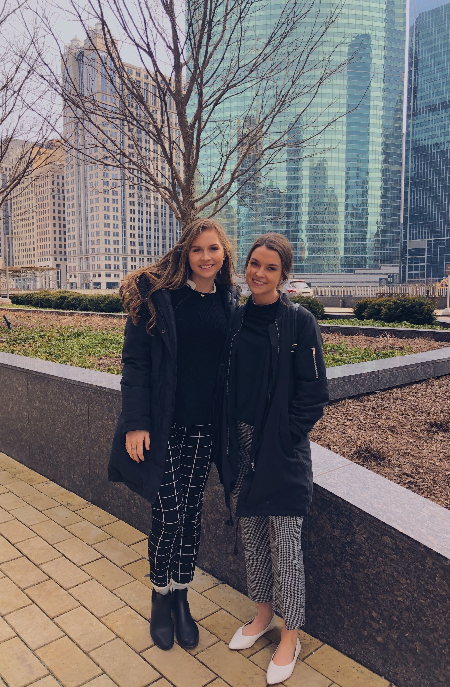

I am a student at the University of Wisconsin–Madison majoring in Retailing and Consumer Behavior in the School of Human Ecology. I am also working towards certificates in Digital Studies, and Entrepreneurship.
The Retailing and Consumer Behavior major is a blend of business, analytics, technology, creativity, and empathy. The major prepares us to enter the retail industry in roles like product development, merchandising, buying, e-commerce, or consumer research.
I am so passionate about this major and my future in this industry. I hope to utilize my creative and analytical abilities to better meet the needs of consumers. I believe through inclusive, sustainable, and creative solutions I can help empower consumers through products and experiences!
Minnesota Industry Trip
Chicago Industry Trip

National Retail Federation Foundation Student Program, NYC